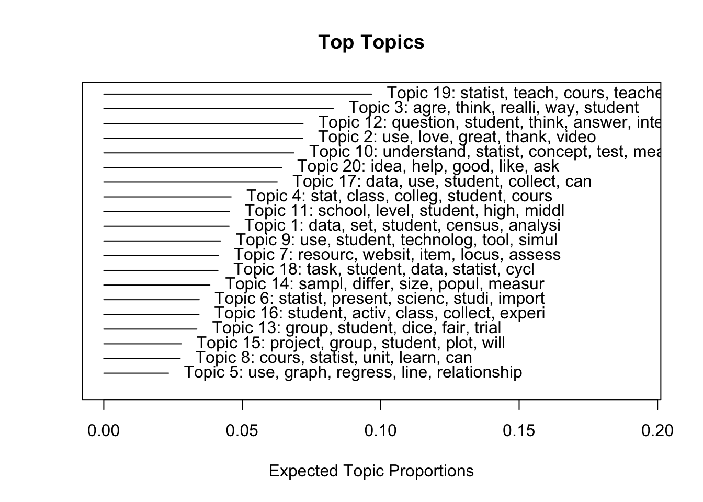
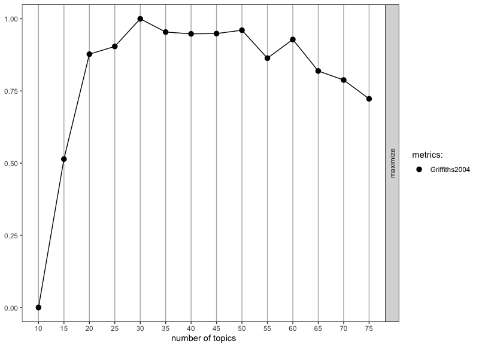
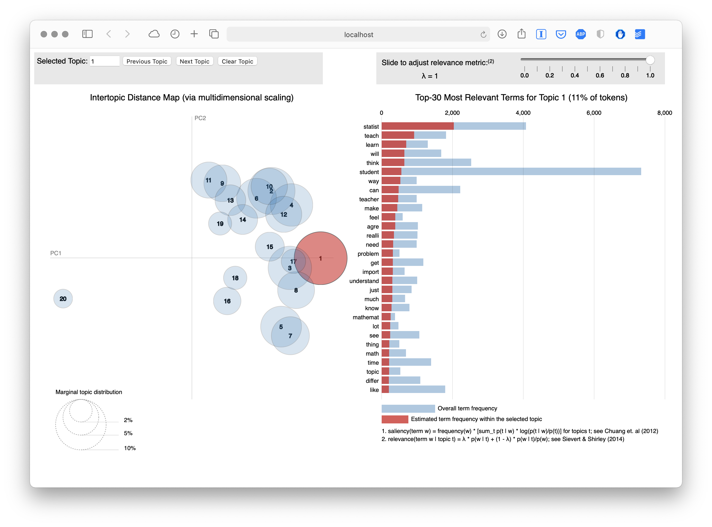
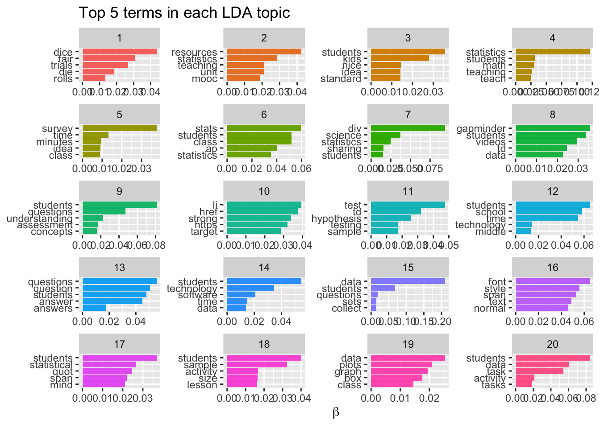
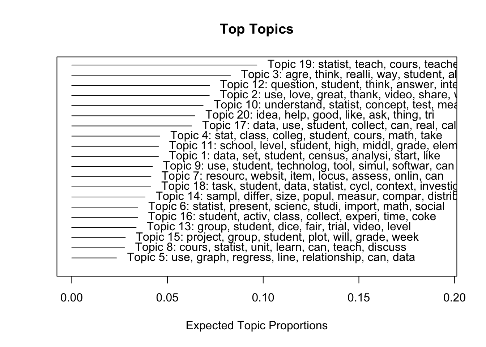

library(tidyverse)
library(tidytext)
library(SnowballC)
library(topicmodels)
library(stm)
library(ldatuning)
library(knitr)
library(LDAvis)Lab 4: Topic Modeling in MOOC-Eds
0. INTRODUCTION
This case study walkthrough extends previous research and evaluation work at the Friday Institute for Educational Innovation at North Carolina State University. In addition to many other areas of inquiry, this work was aimed at understanding and improving peer interaction and discussion in the Friday Institute’s Massively Open Online Courses for Educators (MOOC-Ed) and Online Professional Learning programs. To learn more about these courses and programs, visit: https://place.fi.ncsu.edu
Walkthrough Focus
Our focus will be on identifying “topics” by examining how words cohere into different latent, or hidden, themes based on patterns of co-occurrence of words within documents. With a bit of tongue-in-cheek, Meeks and Weingart (2012) describe topic modeling as:
…focused on corpora and not individual texts, treating the works themselves as unceremonious ‘buckets of words,’ and providing seductive but obscure results in the forms of easily interpreted (and manipulated) ‘topics’…. To achieve its results, it leverages occult statistical methods like ‘dirichlet priors’ and ‘bayesian models.’
That being said, Weingart also noted that “a topic model is a”clever and exceptionally versatile little algorithm that can be customized to all sorts of applications” and Bail (2020) add that topic modeling can be “a powerful tool for identifying general trends in a corpus that can then be analyzed in a more granular manner using other techniques.”
With respect to the actual R workflow of applying topic models to documents and text of interests, Silge & Robinson and a new bottom row their flowchart consisting new data structures (i.e., a corpus object and document-term matrix) and and the LDA model:

As noted by Krumm and Means (2018), this workflow is not always a linear process and there is often a great deal of iteration that occurs within and between wrangling, exploring, modeling. As illustrated by our workflow below, we will primarily explore our data after the modeling process in order to gain some additional insight into the topics generated by our model. Specifically, this walkthrough covers the following concepts and skills:
- Prepare: Prior to analysis, we’ll take a quick look at some of the related MOOC-Ed research and evaluation work to gain some context for our analysis. This should aid in the interpretation of our results and help guide some decisions as we tidy, model, and visualize our data.
- Wrangle: In section 2 we again revisit tidying and tokenizing text using the
tidytextpackage but are also introduced to the thestmpackage. This package makes use oftmtext mining package to preprocess text and will also be our first introduction to word stemming. - Model: We take a look at two different approaches to topic modeling: Latent Dirichlet Allocation (LDA) and Structural Topic Modeling (STM), which is very similar to LDA but can use metadata about documents to improve the assignment of words to “topics” in a corpus and examine relationships between topics and covariates. We will focus on LDA in the zoom meeting.
- Explore: To further explore the results of our topic model, we use several handy functions from the
topicmodelsandstmpackages, including thefindThoughtsfunction for viewing documents assigned to a given topic and thetoLDAvisfunction for exploring topic and word distributions.
1. PREPARE
To help us better understand the context, questions, and data sources we’ll be using, this section will focus on the following topics:
- Context. As context for our analysis, we’ll review several related papers by my colleagues relevant to the analysis of MOOC-Ed discussion forums.
- Questions. We’ll also examine what insight topic modeling can provide to a question that we asked participants answer in their professional learning teams (PLTs).
- Project Setup. This should be very familiar by now, but we’ll set up a new R project and install and load the required packages for the topic modeling walkthrough.
1a. Context
Participating in a MOOC and Professional Learning Team: How a Blended Approach to Professional Development Makes a Difference

Full text: https://www.learntechlib.org/p/195234/
Abstract
Massive Open Online Courses for Educators (MOOC-Eds) provide opportunities for using research-based learning and teaching practices, along with new technological tools and facilitation approaches for delivering quality online professional development. The Teaching Statistics Through Data Investigations MOOC-Ed was built for preparing teachers in pedagogy for teaching statistics, and it has been offered to participants from around the world. During 2016-2017, professional learning teams (PLTs) were formed from a subset of MOOC-Ed participants. These teams met several times to share and discuss their learning and experiences. This study focused on examining the ways that a blended approach to professional development may result in similar or different patterns of engagement to those who only participate in a large-scale online course. Results show the benefits of a blended learning environment for retention, engagement with course materials, and connectedness within the online community of learners in an online professional development on teaching statistics. The findings suggest the use of self-forming autonomous PLTs for supporting a deeper and more comprehensive experience with self-directed online professional developments such as MOOCs. Other online professional development courses, such as MOOCs, may benefit from purposely suggesting and advertising, and perhaps facilitating, the formation of small face-to-face or virtual PLTs who commit to engage in learning together.
Data Source & Analysis
All peer interaction, including peer discussion, take place within discussion forums of MOOC-Eds, which are hosted using the Moodle Learning Management System. To build the dataset you’ll be using for this walkthrough, the research team wrote a query for Moodle’s MySQL database, which records participants’ user-logs of activity in the online forums. This sql query combines separate database tables containing postings and comments including participant IDs, timestamps, discussion text and other attributes or “metadata.”
For further description of the forums and data retrieval process, see also the following papers:
Kellogg, S., & Edelmann, A. (2015). Massively Open Online Course for Educators (MOOC‐Ed) network dataset. British journal of educational technology, 46(5), 977-983.
Ezen-Can, A., Boyer, K. E., Kellogg, S., & Booth, S. (2015, March). Unsupervised modeling for understanding MOOC discussion forums: a learning analytics approach. In Proceedings of the fifth international conference on learning analytics and knowledge (pp. 146-150).
Kellogg, S., Booth, S., & Oliver, K. (2014). A social network perspective on peer supported learning in MOOCs for educators. International Review of Research in Open and Distributed Learning, 15(5), 263-289.
Summary of Key Findings
The following highlight some key findings related to the discussion forums in the papers cited above:
- MOOCs designed specifically for K-12 teachers can provide positive self-directed learning experiences and rich engagement in discussion forums that help form online communities for educators.
- Analysis of discussion forum data in TSDI provided a very clear picture of how enthusiastic many PLT members and leaders were to talk to others in the online community. They posed their questions and shared ideas with others about teaching statistics throughout the units, even though they were also meeting synchronously several times with their colleagues in small group PLTs.
- Findings on knowledge construction demonstrated that over half of the discussions in both courses moved beyond sharing information and statements of agreement and entered a process of dissonance, negotiation and co-construction of knowledge, but seldom moved beyond this phase in which new knowledge was tested or applied. These findings echo similar research on difficulties in promoting knowledge construction in online settings.
- Topic modeling provides more interpretable and cohesive models for discussion forums than other popular unsupervised modeling techniques such as k-means and k-medoids clustering algorithms.
1b. Guiding Questions
For the paper, Participating in a MOOC and Professional Learning Team: How a Blended Approach to Professional Development Makes a Difference, the researchers were interested in unpacking how participants who enrolled in the Teaching Statistics through Data Investigations MOOC-Ed might benefit from also being in a smaller group of professionals committed to engaging in the same professional development. The specific research question for this paper was:
What are the similarities and differences between how PLT members and Non-PLT online participants engage and meet course goals in a MOOC-Ed designed for educators in secondary and collegiate settings?
Dr. Hollylynne Lee and the TSDI team also developed a facilitation guide designed specifically for PLT teams to help groups synthesize the ideas in the course and make plans for how to implement new strategies in their classroom in order to impact students’ learning of statistics. One question PLT members were asked to address was:
What ideas or issues emerged in the discussion forums this past week?
For this walkthrough, we will further examine that question through the use of topic modeling.
One overarching question that Silge and Robinson (2018) identify as a central question to text mining and natural language processing, is:
How do we to quantify what a document or collection of documents is about?
1c. Set Up
First, let’s load the following packages that we’ll be needing for this walkthrough:
2. WRANGLE
Data wrangling involves some combination of cleaning, reshaping, transforming, and merging data (Wickham & Grolemund, 2017). We’ll revisit tidying and tokenizing text using the tidytext package, but are also introduced to the the stm package. This package makes use of tm text mining package to preprocess text (e.g., removing punctuation, stop words, etc.) and will also be our first introduction to word stemming.
- Import Data. We’ll be working with .csv files and the
read_csv()function but will introduce a new argument for changing column types. - Cast a DTM. We revisit the
tidytextpackage to “tidy” and tokenize our forum data and introduce thecast_dtm()function to create the document term matrix (dtm) need for topic modeling. - To Stem or not to STEM? We conclude our data wrangling by also introducing the
textProcessor()function for preprocessing and discuss the pros and cons of word stemming.
2a. Import Forum Data
To get started, we need to import, or “read”, our data into R. The function used to import your data will depend on the file format of the data you are trying to import. First, however, you’ll need to do the following:
- Download the
ts_forum_data.csvfile we’ll be using. - Create a folder in the directory on your computer where you stored your R Project and name it “data”.
- Add the file to your data folder.
- Check your Files tab in RStudio to verify that your file is indeed in your data folder.
Now let’s read our data into our Environment using the read_csv() function and assign it to a variable name so we can work with it like any other object in R.
ts_forum_data <- read_csv("data/ts_forum_data.csv",
col_types = cols(course_id = col_character(),
forum_id = col_character(),
discussion_id = col_character(),
post_id = col_character()
)
)By default, many of the columns like course_id and forum_id are read in as numeric data. For our purposes, we plan to treat them as unique identifiers or names for out courses, forums, discussions, and posts. The read_csv() function has a handy col_types = argument changing the column types from numeric to characters.
2b. Cast a Document Term Matrix
In this section we’ll revisit some familiar tidytext functions used in sentiment analysis for tidying and tokenizing text and introduce some new functions from the stm package for processing text and transforming our data frames into new data structures required for topic modeling.
Functions Used
tidytext functions
unnest_tokens()splits a column into tokensanti_join()returns all rows from x without a match in y and used to removestop wordsfrom out data.cast_dtm()takes a tidied data frame take and “casts” it into a document-term matrix (dtm)
dplyr functions
count()lets you quickly count the unique values of one or more variablesgroup_by()takes a data frame and one or more variables to group bysummarise()creates a summary of data using arguments like sum and mean
stm functions
textProcessor()takes in a vector or column of raw texts and performs text processing like removing punctuation and word stemming.prepDocuments()performs several corpus manipulations including removing words and renumbering word indices
Tidying Text
Prior to topic modeling, we have a few remaining steps to tidy our text. These preprocessing steps include:
- Transforming our text into “tokens”
- Removing unnecessary characters, punctuation, and whitespace
- Converting all text to lowercase
- Removing stop words such as “the”, “of”, and “to”
Let’s tokenize our forum text and by using the familiar unnest_tokens() and remove stop words:
forums_tidy <- ts_forum_data %>%
unnest_tokens(output = word, input = post_content) %>%
anti_join(stop_words, by = "word")
forums_tidy# A tibble: 192,160 × 14
course_id course_name forum_id forum_name discussion_id discussion_name
<chr> <chr> <chr> <chr> <chr> <chr>
1 9 Teaching Statist… 126 Investiga… 6822 Not much compa…
2 9 Teaching Statist… 126 Investiga… 6822 Not much compa…
3 9 Teaching Statist… 126 Investiga… 6822 Not much compa…
4 9 Teaching Statist… 126 Investiga… 6822 Not much compa…
5 9 Teaching Statist… 126 Investiga… 6822 Not much compa…
6 9 Teaching Statist… 126 Investiga… 6822 Not much compa…
7 9 Teaching Statist… 126 Investiga… 6822 Not much compa…
8 9 Teaching Statist… 126 Investiga… 6822 Not much compa…
9 9 Teaching Statist… 126 Investiga… 6822 Not much compa…
10 9 Teaching Statist… 126 Investiga… 6822 Not much compa…
# ℹ 192,150 more rows
# ℹ 8 more variables: discussion_creator <dbl>, discussion_poster <dbl>,
# discussion_reference <chr>, parent_id <dbl>, post_date <chr>,
# post_id <chr>, post_title <chr>, word <chr>Now let’s do a quick word count to see some of the most common words used throughout the forums. This should get a sense of what we’re working with and later we’ll need these word counts for creating our document term matrix for topic modeling:
forums_tidy %>%
count(word, sort = TRUE)# A tibble: 13,620 × 2
word n
<chr> <int>
1 students 6841
2 data 4365
3 statistics 3103
4 school 1488
5 questions 1470
6 class 1426
7 font 1311
8 span 1267
9 time 1253
10 style 1150
# ℹ 13,610 more rowsTerms like “students,” “data,” and “class” are about what we would have expected from a course teaching statistics. The term “agree” and “time” however, are not so intuitive and worth a quick look as well.
✅ Comprehension Check
Use the filter() and grepl() functions to filter for rows in our ts_forum_data data frame that contain the terms “agree” and “time” and another term or terms of your choosing. Select a random sample of 10 posts using the sample_n() function for your terms and answer the following questions:
What, if anything, do these posts have in common?
What topics or themes might be apparent, or do you anticipate emerging, from our topic modeling?
Your output should look something like this:
# A tibble: 10 × 1
post_content
<chr>
1 "I agree. It was good to see how the same data set looked different for the…
2 "I agree that it is difficult to get students to pose questions. I teach onl…
3 "Dear Hollylynne Lee all participants and the Teaching Statistics Design Te…
4 "After looking through the examples it made me think about the Black-Schole…
5 "I was interested to hear Dr. Webster West talk about how Probability and St…
6 "My students have the hardest time year in and year out trying to identify t…
7 "I agree that this was probably a pre-assessment but I wish I had known tha…
8 "in the old faithful data there was a lot of data that deal with the blast …
9 "I really like Paige's suggestion for the opening week activity. I think it…
10 "I really enjoyed the video on Statcrunch. Just listening to the dialogue b…Creating a Document Term Matrix
As highlighted in Chapter 5 of Text Mining with R, the topicmodels package and the Latent Dirichlet allocation (LDA) algorithm and LDA() function it uses expects document-term matrix as the data input.
Before we create a our document-term matrix, however, we have an important decision to make:
What do we consider to be a “document” in a MOOC-Ed discussion forum?
For example, we could consider each individual discussion post, or post_id in our data frame, as a document. It might also make sense to combine texts from all posts within each discussion, or disccussion_id, and consider that as a document since these posts are often interconnected an build off one another.
For now, however, let treat each individual post as a unique “document.” noted above, to create our document term matrix, we’ll need to first count() how many times each word occurs in each document, or post_id in our case, and create a matrix that contains one row per post as our original data frame did, but now contains a column for each word in the entire corpus and a value of n for how many times that word occurs in each post.
To create this document term matrix from our post counts, we’ll use the cast_dtm() function like so and assign it to the variable forums_dtm:
forums_dtm <- forums_tidy %>%
count(post_id, word) %>%
cast_dtm(post_id, word, n)✅ Comprehension Check
Take a look at our forums_dtm object in the console and answer the following question:
- What “class” of object is
forums_dtm? - How many unique documents and terms are included our matrix?
- Why might there be fewer documents/posts than were in our original data frame?
- What exactly is meant by “sparsity”?
[1] "DocumentTermMatrix" "simple_triplet_matrix"<<DocumentTermMatrix (documents: 5766, terms: 13620)>>
Non-/sparse entries: 142641/78390279
Sparsity : 100%
Maximal term length: NA
Weighting : term frequency (tf)2c. To Stem or not to Stem?
Next we’ll need to prepare our original data set for structural topic modeling using the textProcessor() function. The stm package has a number of features that extend the functionality of the topicmodels package, including an argument for “stemming” words, which Schofield and Mimno (2016) describe as follows:
Stemming is a popular way to reduce the size of a vocabulary in natural language tasks by conflating words with related meanings. Specifically, stemming aims to convert words with the same “stem” or root (e.g “creative” and “creator”) to a single word type (“create”). Though originally developed in the context of information retrieval (IR) systems, stemmers are now commonly used as a preprocessing step in unsupervised machine learning tasks.
The rationale behind stemming is that it can dramatically reduce the number of words or terms to be modeled, which in theory should help simplify and improve the performance of your model. We’ll explore this assumption a little later in this section.
Processing and Stemming for STM
Like unnest_tokens(), the textProcessor() function includes several useful arguments for processing text like converting text to lowercase and removing punctuation and numbers. I’ve included several of these in the script below along with their defaults used if you do not explicitly specify in your function. Most of these are pretty intuitive and you can learn more by viewing the ?textProcessor documentation.
Let’s go ahead and process our discussion forum post_content in preparation for structural topic modeling:
temp <- textProcessor(ts_forum_data$post_content,
metadata = ts_forum_data,
lowercase=TRUE,
removestopwords=TRUE,
removenumbers=TRUE,
removepunctuation=TRUE,
wordLengths=c(3,Inf),
stem=TRUE,
onlycharacter= FALSE,
striphtml=TRUE,
customstopwords=NULL)Building corpus...
Converting to Lower Case...
Removing punctuation...
Removing stopwords...
Removing numbers...
Stemming...
Creating Output... Note that the first argument the textProcessor function expects is the column in our data frame that contains the text to be processed, the second argument metadata = expects the data frame that contains the text of interest and uses the column names to label the metadata such as course ids and forum names. This metadata can be used to to improve the assignment of words to topics in a corpus and examine the relationship between topics and various covariates of interest.
Unlike the unnest_tokens() function, the output is not a nice tidy data frame. Topic modeling using the stm package requires a very unique set of inputs that are specific to the package. The following code will pull elements from the temp list that was created that will be required for the stm() function we’ll use in Section 4:
meta <- temp$meta
vocab <- temp$vocab
docs <- temp$documentsStemming Tidy Text
Notice that the textProcessor stem argument we used above is set to TRUE by default. We haven’t introduced word stemming at this point because there is some debate about the actual value of this process. While words like “students” and “student” might make sense to collapse into their base word and actually make analyses and visualizations more concise and easier to interpret. Hvitfeldt and Silge (2021) note, however, that words like the following have dramatic differences in meaning, semantics, and use and could result in poor models or misinterpreted results:
- meaning and mean
- likely, like, liking
- university and universe
The first word pair is particularly relevant to discussion posts from our Teaching Statistics course data. In addition, collapsing words like “teachers” and “teaching” could dramatically alter the results from a topic model.
Schofield and Mimno (2016) specifically,
Despite their frequent use in topic modeling, we find that stemmers produce no meaningful improvement in likelihood and coherence and in fact can degrade topic stability.
For now, we will leave as is the forums_dtm we created earlier with words unstemmed, but what if we wanted to stem words in a “tidy” way?
Since the unnest_tokens() function does not (intentionally I believe) include a stemming function, one approach would be to use the wordStem() function from the snowballC package to either replace our words column with a word stems or create a new variable called stem with our stemmed words. Let’s do the latter and take a look at the original words and the stem that was produced:
stemmed_forums <- ts_forum_data %>%
unnest_tokens(output = word, input = post_content) %>%
anti_join(stop_words, by = "word") %>%
mutate(stem = wordStem(word))
stemmed_forums# A tibble: 192,160 × 15
course_id course_name forum_id forum_name discussion_id discussion_name
<chr> <chr> <chr> <chr> <chr> <chr>
1 9 Teaching Statist… 126 Investiga… 6822 Not much compa…
2 9 Teaching Statist… 126 Investiga… 6822 Not much compa…
3 9 Teaching Statist… 126 Investiga… 6822 Not much compa…
4 9 Teaching Statist… 126 Investiga… 6822 Not much compa…
5 9 Teaching Statist… 126 Investiga… 6822 Not much compa…
6 9 Teaching Statist… 126 Investiga… 6822 Not much compa…
7 9 Teaching Statist… 126 Investiga… 6822 Not much compa…
8 9 Teaching Statist… 126 Investiga… 6822 Not much compa…
9 9 Teaching Statist… 126 Investiga… 6822 Not much compa…
10 9 Teaching Statist… 126 Investiga… 6822 Not much compa…
# ℹ 192,150 more rows
# ℹ 9 more variables: discussion_creator <dbl>, discussion_poster <dbl>,
# discussion_reference <chr>, parent_id <dbl>, post_date <chr>,
# post_id <chr>, post_title <chr>, word <chr>, stem <chr>You can see that words like “activity” and “activities” that occur frequently in our discussions have been reduced to the word stem “activ”. If you are interested in learning other approaches for word stemming in R, as well as reading a more in depth description of the stemming process, I highly recommend the Chapter 4 Stemming from Hvitfeldt and Silge (2021) book, Supervised Machine Learning for Text Analysis in R.
✅ Comprehension Check
Complete the following code using what we learned in the section on Creating a Document Term Matrix and answer the following questions:
- How many fewer terms are in our stemmed document term matrix?
- Did stemming words significantly reduce the sparsity of the network?
Hint: Make sure your code includes stem counts rather than word counts.
stemmed_dtm <- ts_forum_data %>%
unnest_tokens(output = word, input = post_content) %>%
anti_join(stop_words, by = "word") %>%
mutate(stem = wordStem(word)) %>%
______() %>%
______() %>%
stemmed_dtm# A tibble: 10,001 × 2
stem n
<chr> <int>
1 student 7354
2 data 4365
3 statist 4161
4 question 2470
5 teach 1858
6 class 1738
7 school 1606
8 time 1457
9 learn 1372
10 font 1311
# ℹ 9,991 more rows3. MODEL
In very simple terms, modeling involves developing a mathematical summary of a dataset. These summaries can help us further explore trends and patterns in our data.
In their book, Learning Analytics Goes to School, Krumm and Means (2018) describe two general types of modeling approaches used in the Data-Intensive Research workflow: unsupervised and supervised machine learning. In distinguishing between the two, they note:
Unsupervised learning algorithms can be used to understand the structure of one’s dataset. Supervised models, on the other hand, help to quantify relationships between features and a known outcome. Known outcomes are also commonly referred to as labels or dependent variables.
In Section 3 we focus on Topic Modeling, an unsupervised learning approach to automatically identify topics in a collection of documents. In fact, we’ll explore two different approaches to topic modeling, as well as strategies for identifying the “right” number of topics:
- Fitting a Topic Modeling with LDA. In this section we learn to use the
topicmodelspackage and associatedLDA()function for unsupervised classification of our forum discussions to find natural groupings of words, or topics. (the focus of zoom session) - Fitting a Structural Topic Model. We then explore the use of the
stmpackage andstm()function to fit our model and uses metadata about documents to improve the assignment of words to “topics” in a corpus. - Choosing K. Finally, we wrap up Section 3 by learning about diagnostic properties like exclusivity, semantic coherence, and held out likelihood for helping to select an appropriate number of topics.
3a. Fitting a Topic Modeling with LDA
Before running our first topic model using the LDA() function, let’s learn some basic principles behind Latent Dirichlet allocation and why LDA is of preferred over other automatic classification or clustering approaches.
Unlike simple forms of cluster analysis such as k-means clustering, LDA is a “mixture” model, which in our context means that:
- Every document contains a mixture of topics. Unlike algorithms like k-means, LDA treats each document as a mixture of topics, which allows documents to “overlap” each other in terms of content, rather than being separated into discrete groups. So in practice, this means that a discussion forum post could have an estimated topic proportion of 70% for Topic 1 (e.g. be mostly about a Topic 1), but also be partly about Topic 2.
- Every topic contains a mixture of words. For example, if we specified in our LDA model just 2 topics for our discussion posts, we might find that one topic seems to be about pedagogy while another is about learning. The most common words in the pedagogy topic might be “teacher”, “strategies”, and “instruction”, while the learning topic may be made up of words like “understanding” and “students”. However, words can be shared between topics and words like “statistics” or “assessment” might appear in both equally.
Similar to k-means other other simple clustering approaches, however, LDA does require us to specify a value of k for the number of topics in our corpus. Selecting k is no trivial matter and can greatly impact your results.
Since we don’t have a have strong rationale about the number of topics that might exist in discussion forums, let’s use the n_distinct() function from the dplyr package to find the number of unique forum names in our course data and run with that:
n_distinct(ts_forum_data$forum_name)[1] 21Since it looks like there are 20 distinct discussion forums, we’ll use that as our value for the k = argument of the LDA(). Be patient while this runs, since the default setting of is to perform a large number of iterations.
n_distinct(ts_forum_data$forum_name)[1] 21forums_lda <- LDA(forums_dtm,
k = 20,
control = list(seed = 588)
)
forums_ldaA LDA_VEM topic model with 20 topics.Note that we used the control = argument to pass a random number (588) to seed the assignment of topics to each word in our corpus. Since LDA is a stochastic algorithm that could have different results depending on where the algorithm starts, specified a seed for reproducibility and so we’re all seeing the same results every time we specify the same number of topics.
3b. Fitting a Structural Topic Model
Bail notes that LDA, while perhaps the most common approach to topic modeling, is just one of many different types, including Dynamic Topic Models, Correlated Topic Models, Hierarchical Topic Models, and more recently, Structural Topic Modeling (STM). He argues that one reason STM has rising in popularity and use is that it employs meta data about documents to improve the assignment of words to topics in a corpus and that can be used to examine relationships between covariates and documents.
Also, since Julia Silge has indicated that STM is, “my current favorite implementation of topic modeling in R” and has built supports in the tidytext package for building structural topic models, this package definitely is worth discussing in this walkthrough. I also highly recommend her own walkthrough of the stm package: The game is afoot! Topic modeling of Sherlock Holmes stories as well as her follow up post, Training, evaluating, and interpreting topic models.
The stm Package
As we’ve seen above, STM produced an unusual temp textProcessor output that is unique to the stm package. And as you’ve probably already guessed, the stm() function for fitting a structural topic model does not take a fairly standard document term matrix like the LDA() function.
Before we fit our model, we’ll have to extract the elements from the temp object created after we processed our text. Specifically, the stm() function expects the following arguments:
documents =the document term matrix to be modeled in the native stm formatdata =an optional data frame containing meta data for the prevalence and/or content covariates to include in the modelvocab =a character vector specifying the words in the corpus in the order of the vocab indices in documents.
Let’s go ahead and extract these elements:
docs <- temp$documents
meta <- temp$meta
vocab <- temp$vocab And now use these elements to fit the model using the same number of topics for K that we specified for our LDA topic model. Let’s also take advantage of the fact that we can include the course_id and forum_id covariates in the prevealence = argument to help improve, in theory, our model fit:
forums_stm <- stm(documents=docs,
data=meta,
vocab=vocab,
prevalence =~ course_id + forum_id,
K=20,
max.em.its=25,
verbose = FALSE)
forums_stmA topic model with 20 topics, 5781 documents and a 7820 word dictionary.As noted earlier, the stm package has a number of handy features. One of these is the plot.STM() function for viewing the most probable words assigned to each topic.
By default, it only shows the first 3 terms so let’s change that to 5 to help with interpretation:
plot.STM(forums_stm, n = 5)
Note that you can also just use plot() as well:
plot(forums_stm, n = 5)
✅ Comprehension Check
Fit a model for both LDA and STM using different values for K and answer the following questions:
- What topics appear to be similar to those using 20 topics for K?
- Knowing that you don’t have as much context as the researchers of this study do, how might you interpret one of these latent topics or themes using the key terms assigned?
- What topic emerged that seem dramatically different and how might you interpret this topic?
3c. Finding K
As alluded to earlier, selecting the number of topics for your model is a non-trivial decision and can dramatically impact your results. Bail (2018) notes that
The results of topic models should not be over-interpreted unless the researcher has strong theoretical apriori about the number of topics in a given corpus, or if the researcher has carefully validated the results of a topic model using both the quantitative and qualitative techniques described above.
There are several approaches to estimating a value for K and we’ll take a quick look at one from the ldatuning package and one from our stm package.
The FindTopicsNumber Function
The ldatuning package has functions for both calculating and plotting different metrics that can be used to estimate the most preferable number of topics for LDA model. It also conveniently takes the standard document term matrix object that we created from out tidy text and has the added benefit of running fairly quickly, especially compared to the function for finding K from the stm package.
Let’s use the defaults specified in the ?FindTopicNumber documentation and modify slightly get metrics for a sequence of topics from 10-75 counting by 5 and plot the output we saved using the FindTopicsNumber_plot() function:
k_metrics <- FindTopicsNumber(
forums_dtm,
topics = seq(10, 75, by = 5),
metrics = "Griffiths2004",
method = "Gibbs",
control = list(),
mc.cores = NA,
return_models = FALSE,
verbose = FALSE,
libpath = NULL
)
FindTopicsNumber_plot(k_metrics)Note that the FindTopicNumbers() function contains three additional metrics for calculating metrics that can be used to estimate the most preferable number of topics for LDA model. We used the Griffiths2004 metrics included in the default example and I’ve also found this to produce the most interpretable results as show in the figure below:

As a general rule of thumb and overly simplistic heuristic, we’re looking for an inflection point in our plot which indicates an optimal number of topics to select for a value of K.
The findingK() Function
Finally, Bail (2018) notes that thestm package has a useful function called searchK which allows us to specify a range of values for k and outputs multiple goodness-of-fit measures that are “very useful in identifying a range of values for k that provide the best fit for the data.”
The syntax of this function is very similar to the stm() function we used above, except that we specify a range for k as one of the arguments. In the code below, we search all values of k between 10 and 30.
#I am not expecting you run this code as it will take too long
#findingk <- searchK(docs,
#vocab,
#K = c(5:15),
#data = meta,
#verbose=FALSE)
#plot(findingk)Note that Running searchK() function on this corpus took all night on a pretty powerful MacBook Pro and crashed once as well, so I do not expect you to run this for the walkthrough. I ran a couple iterations and landed on between 5 and 15 with an optimal number of topics somewhere around 14:

Given the somewhat conflicting results, also somewhat selfishly and for the same of simplicity for this walkthrough, I’m just going to stick with the rather arbitrary selection of 20 topics.
The LDAvis Explorer
One final tool that I want to introduce from the stm package is the toLDAvis() function which provides a great visualizations for exploring topic and word distributions using LDAvis topic browser:
toLDAvis(mod = forums_stm, docs = docs)Loading required namespace: servrAs you can see from the browser screen shot below, our current stm model of 20 topics is resulting in a lot of overlap among topics and suggest that 20 may not be an optimal number of topics, as other approaches for finding k also suggests:

4. EXPLORE
Silge and Robinson (2018) note that fitting at topic model is the “easy part.” The hard part is making sense of the model results and that the rest of the analysis involves exploring and interpreting the model using a variety of approaches which we’ll walkthrough in in this section.
Bail (2018) cautions, however, that:
…post-hoc interpretation of topic models is rather dangerous… and can quickly come to resemble the process of “reading tea leaves,” or finding meaning in patterns that are in fact quite arbitrary or even random.
4a. Exploring Beta Values
Hidden within this forums_lda topic model object we created are per-topic-per-word probabilities, called β (“beta”). It is the probability of a term (word) belonging to a topic.
Let’s take a look at the 5 most likely terms assigned to each topic, i.e. those with the largest β values using the terms() function from the topicmodels package:
terms(forums_lda, 5) Topic 1 Topic 2 Topic 3 Topic 4 Topic 5 Topic 6
[1,] "dice" "resources" "students" "statistics" "survey" "stats"
[2,] "fair" "statistics" "kids" "students" "time" "students"
[3,] "trials" "teaching" "nice" "math" "minutes" "class"
[4,] "die" "unit" "idea" "teaching" "idea" "ap"
[5,] "rolls" "mooc" "standard" "teach" "class" "statistics"
Topic 7 Topic 8 Topic 9 Topic 10 Topic 11
[1,] "div" "gapminder" "students" "li" "test"
[2,] "science" "students" "questions" "href" "td"
[3,] "statistics" "videos" "understanding" "strong" "hypothesis"
[4,] "sharing" "td" "assessment" "https" "testing"
[5,] "students" "data" "concepts" "target" "sample"
Topic 12 Topic 13 Topic 14 Topic 15 Topic 16 Topic 17
[1,] "students" "questions" "students" "data" "font" "students"
[2,] "school" "question" "technology" "students" "style" "statistical"
[3,] "time" "students" "software" "questions" "span" "quot"
[4,] "technology" "answer" "time" "sets" "text" "span"
[5,] "middle" "answers" "data" "collect" "normal" "mind"
Topic 18 Topic 19 Topic 20
[1,] "students" "data" "students"
[2,] "sample" "plots" "data"
[3,] "activity" "graph" "task"
[4,] "size" "box" "activity"
[5,] "lesson" "class" "tasks" Even though we’ve somewhat arbitrarily selected the number of topics for our corpus, some these topics or themes are fairly intuitive to interpret. For example:
Topic 11 (technology, students, software, program, excel) seems to be about students use of technology including software programs like excel;
Topic 9 (questions, kids, love, gapminder, sharing) seems to be about the gapminder activity from the MOOC-Ed and kids enjoyment of it; and
Topic 18 (data, students, collect, real, sets) seems to be about student collection and use of real world data sets.
Not surprisingly, the tidytext package has a handy function conveniently name tidy() to convert our lda model to a tidy data frame containing these beta values for each term:
tidy_lda <- tidy(forums_lda)
tidy_lda# A tibble: 272,400 × 3
topic term beta
<int> <chr> <dbl>
1 1 2015 8.35e-281
2 2 2015 1.06e- 3
3 3 2015 7.92e- 45
4 4 2015 5.72e- 67
5 5 2015 3.00e- 31
6 6 2015 5.38e- 36
7 7 2015 4.06e- 34
8 8 2015 1.02e- 33
9 9 2015 1.10e- 4
10 10 2015 6.74e- 5
# ℹ 272,390 more rowsObviously, it’s not very easy to interpret what the topics are about from a data frame like this so let’s borrow code again from Chapter 8.4.3 Interpreting the topic model in Text Mining with R to examine the top 5 terms for each topic and then look at this information visually:
top_terms <- tidy_lda %>%
group_by(topic) %>%
slice_max(beta, n = 5, with_ties = FALSE) %>%
ungroup() %>%
arrange(topic, -beta)
top_terms %>%
mutate(term = reorder_within(term, beta, topic)) %>%
group_by(topic, term) %>%
arrange(desc(beta)) %>%
ungroup() %>%
ggplot(aes(beta, term, fill = as.factor(topic))) +
geom_col(show.legend = FALSE) +
scale_y_reordered() +
labs(title = "Top 5 terms in each LDA topic",
x = expression(beta), y = NULL) +
facet_wrap(~ topic, ncol = 4, scales = "free")
4b. Exploring Gamma Values
Now that we have a sense of the most common words associated with each topic, let’s take a look at the topic prevalence in our MOOC-Ed discussion forum corpus, including the words that contribute to each topic we examined above.
Also, hidden within our forums_lda topic model object we created are per-document-per-topic probabilities, called γ (“gamma”). This provides the probabilities that each document is generated from each topic, that gamma matrix. We can combine our beta and gamma values to understand the topic prevalence in our corpus, and which words contribute to each topic.
To do this, we’re going to borrow some code from the Silge (2018) post, Training, evaluating, and interpreting topic models.
First, let’s create two tidy data frames for our beta and gamma values
td_beta <- tidy(forums_lda)
td_gamma <- tidy(forums_lda, matrix = "gamma")
td_beta# A tibble: 272,400 × 3
topic term beta
<int> <chr> <dbl>
1 1 2015 8.35e-281
2 2 2015 1.06e- 3
3 3 2015 7.92e- 45
4 4 2015 5.72e- 67
5 5 2015 3.00e- 31
6 6 2015 5.38e- 36
7 7 2015 4.06e- 34
8 8 2015 1.02e- 33
9 9 2015 1.10e- 4
10 10 2015 6.74e- 5
# ℹ 272,390 more rowstd_gamma# A tibble: 115,320 × 3
document topic gamma
<chr> <int> <dbl>
1 11295 1 0.00192
2 12711 1 0.000243
3 12725 1 0.0259
4 12733 1 0.00224
5 12743 1 0.00761
6 12744 1 0.00383
7 12756 1 0.0259
8 12757 1 0.00282
9 12775 1 0.00282
10 12816 1 0.00282
# ℹ 115,310 more rowsNext, we’ll adopt Julia’s code wholesale to create a filtered data frame of our top_terms, join this to a new data frame for gamma-terms and create a nice clean table using the kabel() function knitr package:
top_terms <- td_beta %>%
arrange(beta) %>%
group_by(topic) %>%
top_n(7, beta) %>%
arrange(-beta) %>%
select(topic, term) %>%
summarise(terms = list(term)) %>%
mutate(terms = map(terms, paste, collapse = ", ")) %>%
unnest()Warning: `cols` is now required when using `unnest()`.
ℹ Please use `cols = c(terms)`.gamma_terms <- td_gamma %>%
group_by(topic) %>%
summarise(gamma = mean(gamma)) %>%
arrange(desc(gamma)) %>%
left_join(top_terms, by = "topic") %>%
mutate(topic = paste0("Topic ", topic),
topic = reorder(topic, gamma))
gamma_terms %>%
select(topic, gamma, terms) %>%
kable(digits = 3,
col.names = c("Topic", "Expected topic proportion", "Top 7 terms"))| Topic | Expected topic proportion | Top 7 terms |
|---|---|---|
| Topic 4 | 0.087 | statistics, students, math, teaching, teach, school, level |
| Topic 2 | 0.080 | resources, statistics, teaching, unit, mooc, ideas, learning |
| Topic 9 | 0.079 | students, questions, understanding, assessment, concepts, test, statistical |
| Topic 6 | 0.078 | stats, students, class, ap, statistics, school, math |
| Topic 15 | 0.078 | data, students, questions, sets, collect, question, real |
| Topic 20 | 0.070 | students, data, task, activity, tasks, question, cycle |
| Topic 14 | 0.064 | students, technology, software, time, data, agree, real |
| Topic 13 | 0.059 | questions, question, students, answer, answers, correct, results |
| Topic 8 | 0.053 | gapminder, students, videos, td, data, video, site |
| Topic 12 | 0.049 | students, school, time, technology, middle, video, student |
| Topic 3 | 0.045 | students, kids, nice, idea, standard, understand, language |
| Topic 18 | 0.038 | students, sample, activity, size, lesson, data, results |
| Topic 17 | 0.038 | students, statistical, quot, span, mind, level, reasoning |
| Topic 11 | 0.033 | test, td, hypothesis, testing, sample, difference, results |
| Topic 7 | 0.033 | div, science, statistics, sharing, students, love, http |
| Topic 19 | 0.030 | data, plots, graph, box, class, median, plot |
| Topic 10 | 0.030 | li, href, strong, https, target, _blank, statistics |
| Topic 16 | 0.023 | font, style, span, text, normal, 0px, color |
| Topic 5 | 0.020 | survey, time, minutes, idea, class, semester, student |
| Topic 1 | 0.014 | dice, fair, trials, die, rolls, rolling, unfair |
And let’s also compare this to the most prevalent topics and terms from our forums_stm model that we created using the plot() function:
plot(forums_stm, n = 7)
4c. Reading the Tea Leaves
Recognizing that topic modeling is best used as a “tool for reading” and provides only an incomplete answer to our overarching, “How do we quantify what a corpus is about?”, the results do suggest some potential topics that have emerges as well as some areas worth following up on.
Specifically, looking at some of the common clusters of words for the more prevalent topics suggest that some key topics or “latent themes” (renamed in bold) might include:
- Teaching Statistics: Unsurprising, given the course title, the topics most prevalent in both the
forums_stmandforums_ldamodels contains the terms “teach”, “students”, “statistics”. This could be an “overarching theme” but more likely may simply be just the residue of the course title though being sprinkled throughout the forums and deserves some follow up. Topics 8 from the LDA model may overlap with this topic as well. - Course Utility: The second most prevalent Topics (13 and 2) in the
ldaandstmmodels respectively, seem to potentially be about the usefulness of course “resources” like lessons, tools, videos, and activities. I’m wagering this might be a forum dedicated to course feedback. Topic 15 from the STM model also suggest this may be a broader theme. - Using Real-World Data: Topics 18 & 12 from the LDA model particularly intrigue me and I’m wagering this is pretty positive sentiment among participants about the value and benefit of having students collect and analyze real data sets (e.g. Census data in Topic 1) and work on projects relevant to their real life. Will definitely follow up on this one.
- Technology Use: Several topics (6 & 11 from LDA and 8 & 19 from STM) appear to be about student use of technology and software like calculators and Excel for teaching statistics and using simulations. Topic 16 from LDA also suggest the use of the Common Online Data Analysis Platform (CODAP).
- Student Struggle & Engagement: Topic 15 from LDA and Topic 16 from STM also intrigue me and appear to be two opposite sides of perhaps the same coin. The former includes “struggle” and “reading” which suggests perhaps a barrier to teaching statistics while Topic 16 contains top stems like “engage”, “activ”, and “think” and may suggest participants anticipate activities may engage students.
To serve as a check on my tea leaf reading, I’m going to follow Bail’s recommendation to examine some of these topics qualitatively. The stm package has another useful function though exceptionally fussy function called findThoughts which extracts passages from documents within the corpus associate with topics that you specify.
The first line of code may not be necessary for your independent analysis, but because the textProcessor() function removed several documents during processing, the findthoughts() function can’t properly index the processed docs. This line of code found on stackoverflow removes documents from original ts_forum_data source that were removed during processing so there is a one-to-one correspondence with forums_stm and so you can use the function to find posts associated with a given topic.
Let’s slightly reduce our original data set to match our STM model, pass both to the findThoughts() function, and set our arguments to return n =10 posts from topics = 2 (i.e. Topic 2) that have at least 50% or thresh = 0.5 as a minimum threshold for the estimated topic proportion.
ts_forum_data_reduced <-ts_forum_data$post_content[-temp$docs.removed]
findThoughts(forums_stm,
texts = ts_forum_data_reduced,
topics = 2,
n = 10,
thresh = 0.5)
Topic 2:
Here is a cool video with Hans Rosling using Gapminder. It's pretty cool. https://www.youtube.com/watch?v=jbkSRLYSojo
Thank you for sharing the link!!! I think that this is the document that Chris mentions co-writing and being ready for NCTM's National Conference in San Francisco this April. :-)
Yes thank you! The site was an excellent resource especially for someone like myself who is new to this stuff!
I've never heard of FiveThirtyEight could you tell me more about the resource? Thanks! Carisa
QELP looks so cool! Thanks for sharing!
Thanks for letting us know about this TED talk! I watched the one about Ignorance and found Hans Rosling so entertaining that I ended up finding other TED talks he has done and watched them for way too long last night.
Wow! I totally agree with you. The Gapminder was great. Also I was inspired to complete this unit as well. I did not know there was a TedTalk about this. I will have to check it out.
Wow! I totally agree with you. The Gapminder was great. Also I was inspired to complete this unit as well. I did not know there was a TedTalk about this. I will have to check it out.
I love your idea of using this as a STEM night project. Thank you for the thought...I will have to steal it :) Eren
Hi Regina I really like the gapminder site. There are some great video on the gapminder site that I have used in my courses. Hans Rosling founder of gapminder also has some really great TED talks. Sadly he passed away this year. My interests have been peaked by the Locus site. I think there is a lot of potential there for use in my classroom too. Good luck! SharDuplicate posts aside, this Course Utility topic returns posts there were expected based on my interpretation of the key terms for Topic 2. It looks like I may have read those tea leaves correctly.
Now let’s take a look at Topic 16 that we thought might be related to student engagement:
findThoughts(forums_stm,
texts = ts_forum_data_reduced,
topics = 16,
n = 10,
thresh = 0.5)
Topic 16:
Hi Folks One of the discussions that needs to occur when studying the travel time of walking vs. driving by car vs riding on a school bus is the number of stops the bus must make in order to pick up students. One of my previous careers was that of a school bus driver. At each stop I was required to stop the bus put on the flashing lights put on the emergency brake look through all of the mirrors to determine all of the cars had stopped open the bus door then pick up the microphone (which could be heard inside and outside of the bus) to tell the students it was now safe to cross the road and enter the bus. After waiting for all students to get on the bus and take a seat and for the bus monitor to check under the bus and get on the bus again; I would then close the bus door and take off the emergency brake. Next I would check all of my mirrors to make sure it was safe pull completely back into the lane of travel and continue on my bus route. All of these actions increased the amount of time it took to get to school. What is the purpose of this investigation? I would want to know if the students with the longer travel time to and from school are impacted by the amount of time spent traveling each day. What are the grades of the students with the longest travel time how do those grades compare to students with the least travel time? What behaviors are exhibited by students in school who spend the most time traveling to and from school? Are they more likely to exhibit behaviors that result in disciplinary referrals? Does travel time negatively impact the academic and behavioral performance of these students in school? On the flip slide does longer travel time provide the opportunity for students to engage in preferred activities of talking to their friends on the bus or engaging in their electronic device to listen to music or play games and does this provide a beginning and end of the day relaxation experience for the students. Do these students have better grades and less disciplinary referrals?
This is a great activity and can have so many variations. It doesn't have to be Pepsi vs. Coke if you don't have a lot of pop drinkers in class. You can do a name brand vs. generic orange juice or even a taste test with chips or cookies (perhaps blind folds would be necessary for food tasting). I also think one of the best follow-up discussions is about how many students actually prefer what they claim to prefer. Having the preference beforehand definitely enriches the discussions.
I agree and oftentimes do a blindfolded taste test with name brand Oreo cookies and then a store brand cookie. I follow a similar method as the Coke vs. Pepsi one but tweak it a bit for AP Statistics. It is fun to see the looks on kids faces when they \choose\" the generic Oreo because they are just so sure they knew the Oreo! Every time I've done this experiment there seems to be no clear evidence students prefer Oreos :) "
We do which is different out of three as well we also have 6 different combinations and randomly assign students to the combinations (ex coke Pepsi pepsi c p c coke coke pepsi etc)
My colleagues have commented on the Pepsi versus Coke activity. I also commented in there but liked to expand the concept further. When students are involved in an activity they make it there own and really would make it worth their while. Hence when they actually made the data happen being instrumental in not only choosing which brand to anonymously be named and tasted to collating the results the students learn how to make data collection impartial objective and representative. Also they see the process of good data collection by the randomness it was done such that whatever result would really represent a preference for a brand without any prior bias. So the students learn to collect and collate data and results in as objective and unbiased manner such that results are untainted and would truly represent a true preference and not a directed preference through a prior bias. Though it would take a lot of time yet the lessons learned on how data is done and collected and collated was worth its while in the lesson it has rendered.
I have used a similar task comparing bottled water versus tap water or two brands/types of bottled water and it worked pretty well. Sometimes it was interesting to see where students could not tell the difference between tap water and bottled water.
I have done this one as well and it went great. Another version I do is name brand and store brand cookies. Fudge stripes or chips a hoy cookies work great.
I have done this one in class with approximately 20 students. Instead of picking which is which I ask which one is different out of three samples. We design the experiment together and talk about the random assignment of the odd ball drink in which cup consistency in pouring color smell how to blind the experiment ect. We then look at our data and compare it to a simulation to see if we have more \skill\" than randomly guessing. This helps create a smoother transition between simulations and experiments. I have also used different drinks most recently blue Gatorade vs Blue Powerade. Smell and color were factors we had trouble controlling. "
I've seen bottled water vs. tap water too
Hi Erik When I was in school we did a similar activity except that we used regular bags of M&Ms to determine which color is the most common for M&M's. Using skittles would be similar. You could also extend this to see if the type of M&M changes the predominant color - plain vs. peanut vs. ? (there are so many varieties now!).It looks like my tea reading was a partially correct for Topic 16, though the results seem to be about a specific “Pepsi challenge” activity to conduct with students.
Finally, let’s look at posts from Topic 3 which we though might be an overarching theme about teaching statistics:
ts_forum_data_reduced <-ts_forum_data$post_content[-temp$docs.removed]
findThoughts(forums_stm,
texts = ts_forum_data_reduced,
topics = 3,
n = 10,
thresh = 0.5)
Topic 3:
I really like the \Gummy Bears in Space\" activity and I can think of different ways to incorporate this into my 7th grade classroom. I think this would be a great hands on activity to get a STEM or science teacher involved to integrate different subjects into a lesson. "
I agree about them working together. I never have students work independently on these sorts of tasks. It is a richer experience when the conversations can occur about the work being done.
Motivating the students to be interested to learn the material is a big push for me this year. As others stated we as teachers have to be motivated in order for our students to be motivated. I spend a lot of time trying to make my lessons fun and interactive because I know if the students are engaged they will take away more. Some topics are easier than others. Just like it's easier to incorporate real world situations with some topics and not others. I have discovered that once I got the mindset of making them interesting more students was becoming successful on the lesson.
I agree also that listening is beneficial for both students and teachers. The students can hear samples of mathematical/statistical thinking going on...like a \think aloud.\" We need to continually model the thinking process for them and these videos help to show the progression of thinking. It is also helpful for us as teachers to see the directions that student minds are going so that we can encourage them to make even more progress by taking their thinking to the next level. "
Oh yeah. Without a doubt the introduction of the SASI framework was the most useful part of the MOOC for me too. I will definitely be administering this framework in my Statistics classes until it becomes second nature for my students that every time they're thinking about anything statistically significant that they consider the framework in mind.
I agree that the framework is very useful and I would also like to see lessons created that specifically address each aspect of the framework. These lessons would be used to develop a strong expertise with each aspect using a whole-part-whole instructional method. Teach the SASI framework as a whole then break it down into the 4 parts and practice those skills then go back to completing a whole project. The quality of student work may improve with this teaching progression.
I also really loved the gummy bear activity idea. I think that my third graders would also really enjoy an activity like this although they would probably eat the gummy bears. I think it would be a great way for them to get more involved in the lesson.
I agree with the point you made Drew. The discussions made it feel like you were connected with other people and it gave us different ways to look at the particular subject. It gave someone like me who isn't as experienced in statistics viewpoints and thinking strategies from people who are \experts\" in the field. "
I really like the war game activity. It is a game that your student are probably going to know how to play already which should help you when explaining. Also it can really get your students up and going and you will see the competitiveness really kick in with your students. I also like the discussion part you have with it as well because in reality who really knows which deck of cards is going to be the best to pick from so this makes a great topic for discussion and it would be interesting to see what all of your students say. Overall I would have to say you did a great job with your project here. The only way I can see for adjustments though would be after you do your activities the first time because you really don't know how things are going to work out until you actually try them yourself.
I don't know that it is fair to say that they don't want to think and are just looking for formulas. I think in the past this has been their experience though and so they want to fall back on what they know. Hopefully MOOCs like this as well as the common core curriculum should be driving the \thinking\" end of things a little more than ever before. I know I have already started to see a difference in the thinking skills of my students if not their math skills and this is a exciting for my future as a math educator. The experts in the video talk about how collecting and analyzing real world data is engaging for kids because it isn't a worksheet that is disconnected from their lives. I think this engagement necessarily forces them to think which is way more fun than being a formula robot. Anecdotally my brother woke me up this week with an interesting geometry problem that made me think about circles in a new way and it was really exciting. Granted as a math teacher I'm probably to the point where I can be excited about thinking about weird problems but I know that balancing my budget is significantly less exciting that solving weird problems that make me think. Lon story short- I think if we are engaging students with interesting problems they will be practicing thinking skills if we drive class discussions with metacognition they will be practicing thinking skills if we have students pose their own problems that are relevant to their lives they will be practicing thinking skills. If we can make a nation of critical thinkers and problem solvers there should be no limit to what we can accomplish. "Looking at just the 10 posts returned, perhaps a better name for this topic would be Course Reflections on Teaching Statistics.
Takeaway
In addition to some useful R packages and functions for the actual process of topic modeling, hopefully there are two main lessons I’m hoping you take away from this walkthrough:
- Topic modeling requires a lot of decisions. Beyond deciding on a value for K, there are a number of key decisions that you have to make that can dramatically affect your results. For example, to stem or not to stem? What qualifies as a document? What flavor or topic modeling is best suited to your data and research questions? How many iterations to run?
- Topic modeling is as much art as (data) science. As Bail (2018) noted, the term “topic” is somewhat ambitious, and topic models do not produce highly nuanced classification of texts. Once you’ve fit your model, interpreting your model requires some mental gymnastics and ideally some knowledge of the context from which the data came to help with interpretation of your topics. Moreover, the quantitative approaches for making the decisions highlighted above are imperfect and a good deal of human judgment required.
✅ Comprehension Check
Using the STM model you fit from the Section 3 [Comprehension Check] with a different value for K, use the approaches demonstrated in Section 4 to explore and interpret your topics and terms and revisit the following question:
- Now that you have a little more context, how might you revise your initial interpretation of some of the latent topics or latent themes from your model?